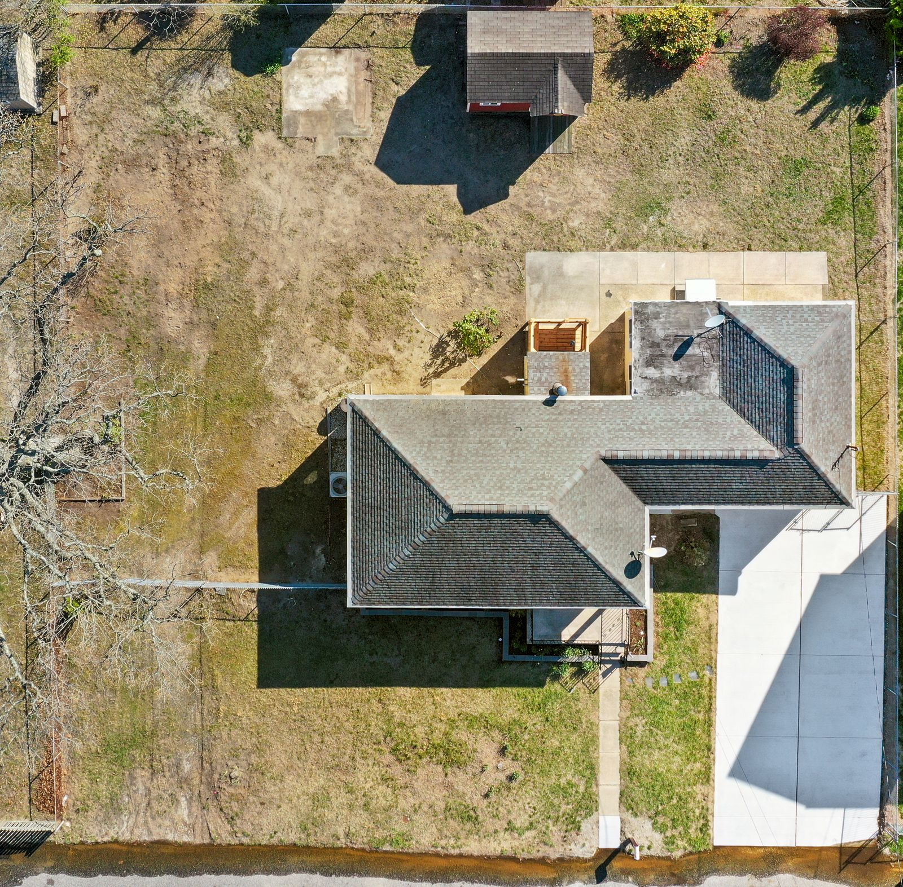
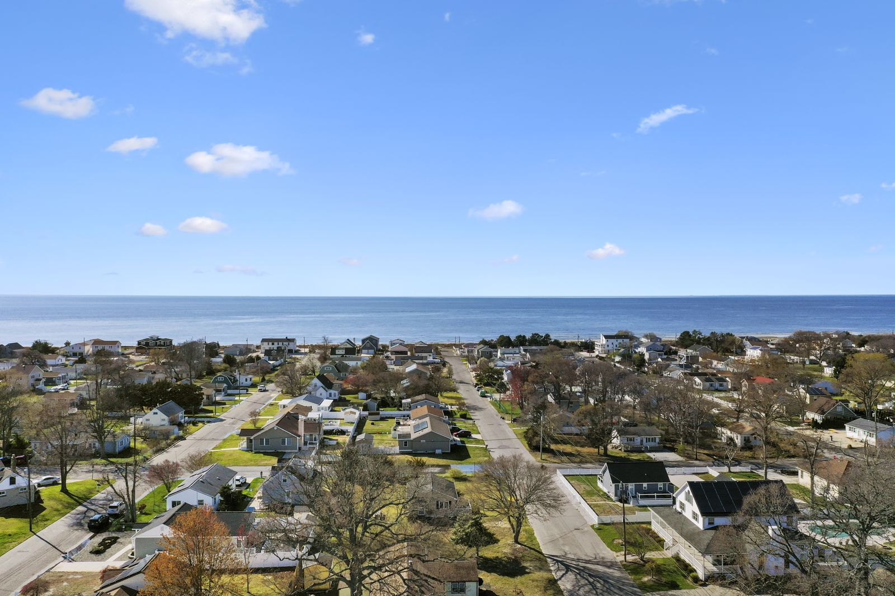
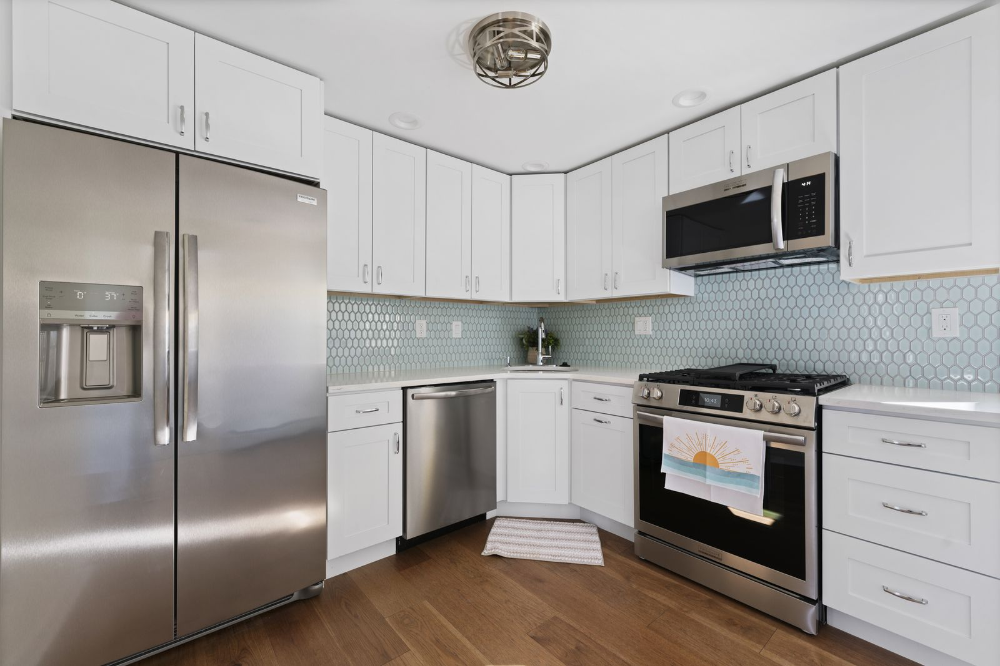
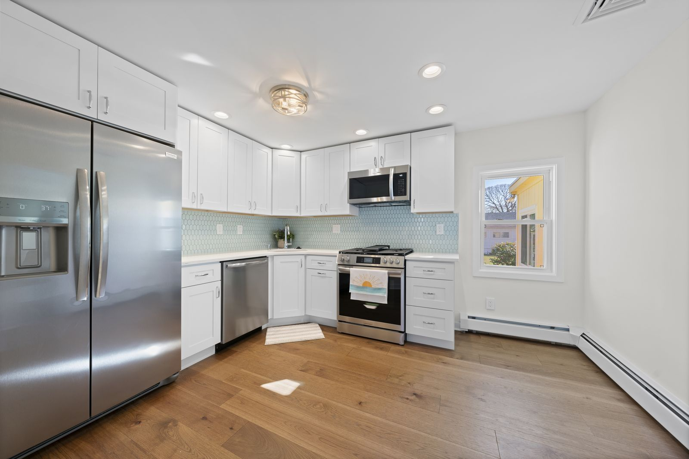
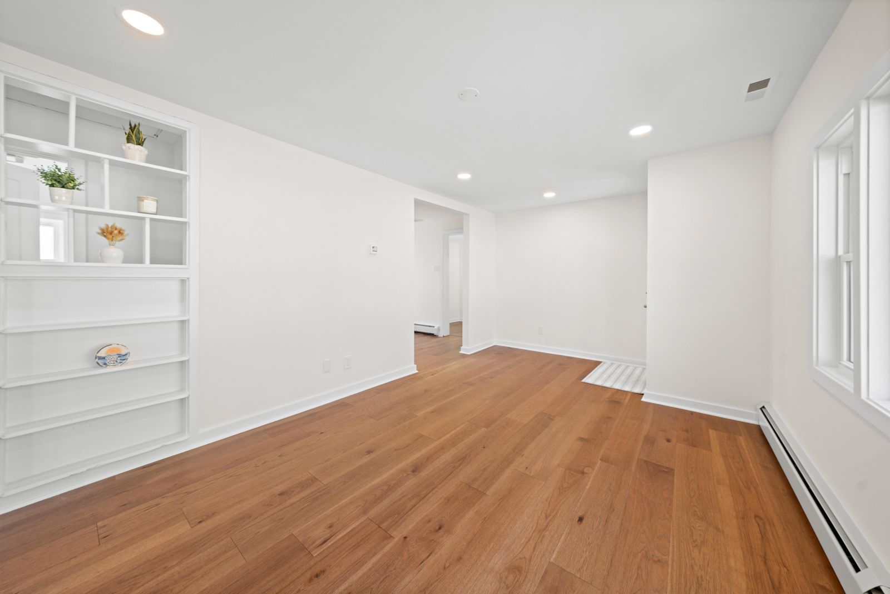
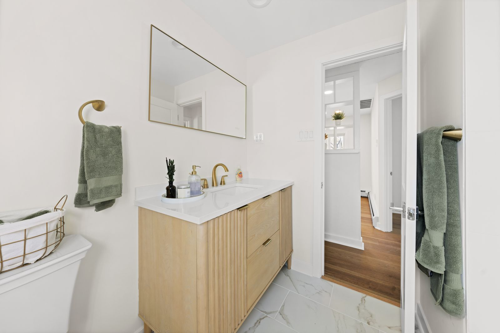
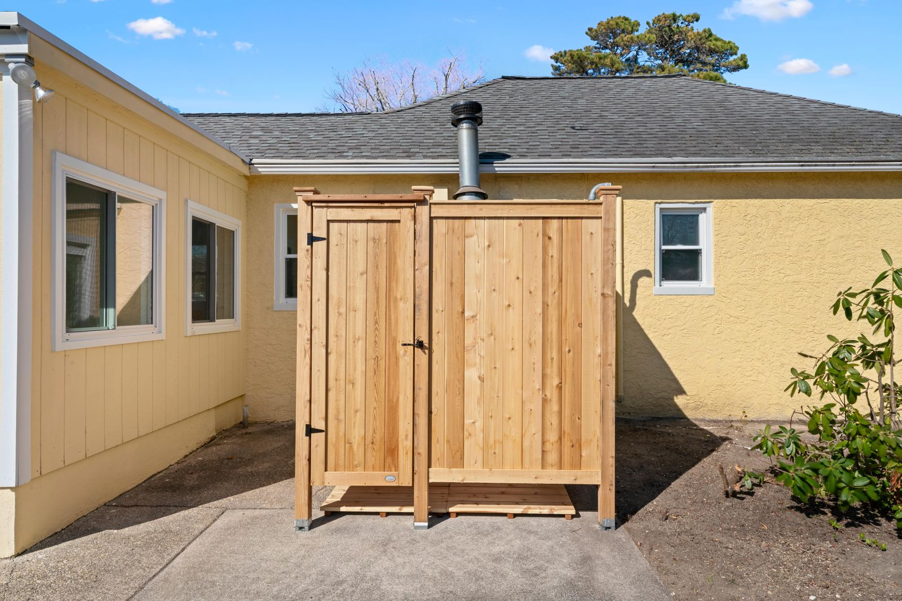
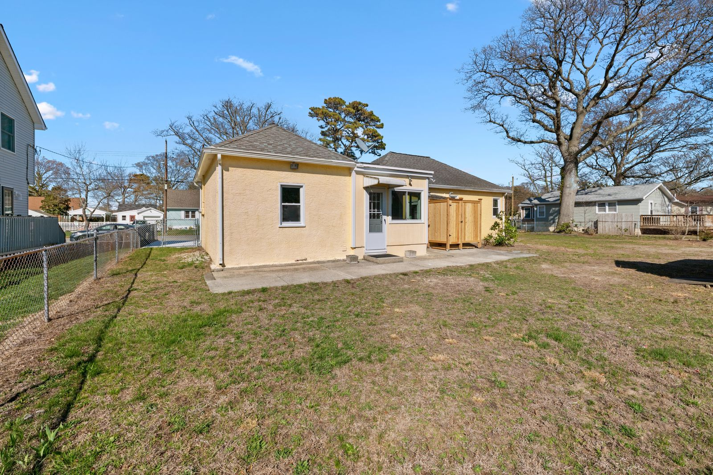

Real Estate Photography in Villas, NJ: 110 W Wilde Ave
About this Villas listing shoot
Listing Pixl provided professional real estate photography for this Villas, New Jersey property at 110 W Wilde Ave 08251. A renovated Villas ranch with a new kitchen, an outdoor shower and drone aerials toward the bay. The shoot was booked by Jason Ruffenach of eXp Realty to give the listing scroll-stopping photos for the MLS, Zillow, and social media.
This yellow ranch on W Wilde Ave in Villas was freshly renovated, and the photos needed to show the new work. The shoot covered the white shaker kitchen from two angles, the open living space with new floors and the updated bathroom, then stepped outside for the cedar outdoor shower and backyard. Drone aerials show the lot from above and the home's spot a short drive from the bay.

















What we photographed
- Front exterior with the new driveway and garage
- White shaker kitchen and wide-plank floors
- Open living space and updated bathroom
- Cedar outdoor shower and backyard shed
- Top-down drone view and aerials toward the Delaware Bay
Real estate photography services delivered
This Villas NJ shoot included HDR listing photography with professional editing and color correction, delivered next-day and sized ready for the MLS. Drone aerial photography showed the lot, the setting, and the surrounding Villas neighborhood — the views that make South Jersey listings stand out online.
Real estate photography in Villas, NJ
Villas is a bayside community in Lower Township on the Delaware Bay, known for its quiet residential streets, beach access along the bay and some of the best sunsets in Cape May County. Homes here range from classic shore cottages and ranches to renovated and new construction homes. Listing photos in Villas sell the lifestyle as much as the house, so we use drone aerials to show how close a home sits to the bay.
See packages, FAQs and every shoot in town on our Villas, NJ real estate photographer page.
More shoots near Villas
Lock In a Villas, NJ Real Estate Photographer
Selling in Villas or anywhere in Cape May County? Listing Pixl shoots across Villas, North Cape May, Cape May, Rio Grande, Cape May Court House, Wildwood, and surrounding South Jersey towns. Packages from $295. Call or text (609) 780-7027 or lock in your shoot online.